江淮天青，雨水湖蓝
本文同步登载于知乎，标题同名。
春节总算是从西安回到了长三角地区。2023年早已乘过西安铁路局的原色全功能双层列车了，——彼时的它们还在担当T7009/10次列车的客运任务，——如今调图之后这番号已经没了音讯，只听闻春运期间双层降级为普快列车K1001/2/3/4的本务往来于宝鸡和重庆西之间。
2014年中国铁路总公司运输局下令2015年1月1日后竣工的新造25型客车及厂修、段修25型客车，采用以橄榄绿为主色的涂装方案，通过腰饰带两端形状的淡黄色块数量区别不同的车型；为了描述在“刷绿”大潮下逃过一劫的车厢才诞生了“原色”的概念。作为新涂装方案中明确提出的例外车型之一，双层列车虽然最有可能保持“原色”，但总产量并不多。
南京浦镇车辆厂为中长途旅客出行而专门设计的双层硬软卧车厢更是少中又少；因此宝渝之间往返的全功能双层列车更显得可贵。然而这对列车唯独缺少了软座；而上海铁路局则虽已没有能够继续运行的双层卧铺车厢，但却拥有一定数量的双层软座车。目前的所有仍具备运行能力的双层软座车（SRZ）只剩下上海铁路局的几列；而这几列车厢更是原本第二批生产的SRZ25Z为了统一车辆编号才将车身标记更换为25K，生产时间距今年已有28年。一节车厢在运行16年后会进行一次大厂（A5）修，其后最多也只能再运行16年；因此留给这几节车厢的时间不多了。今年听不可靠消息称长三角准备在春运给这几节列车“最后一舞”，因此立即将乘坐双层列车提上了最高日程。
今年的双层列车会往返于合肥、淮北、芜湖、连云港东四地。很多次在12306软件上买票都只买到了单层列车的软卧代座，因此不得不根据已经前往乘坐过的人的视频判断这几列车的本务时间表。几番周折，终于研究出了最好的时间——根据这三趟车的时刻表，我恰好能在这张排班表中的第一天在阜阳站完成双向双层列车的换乘，于是计划便这么定下了。
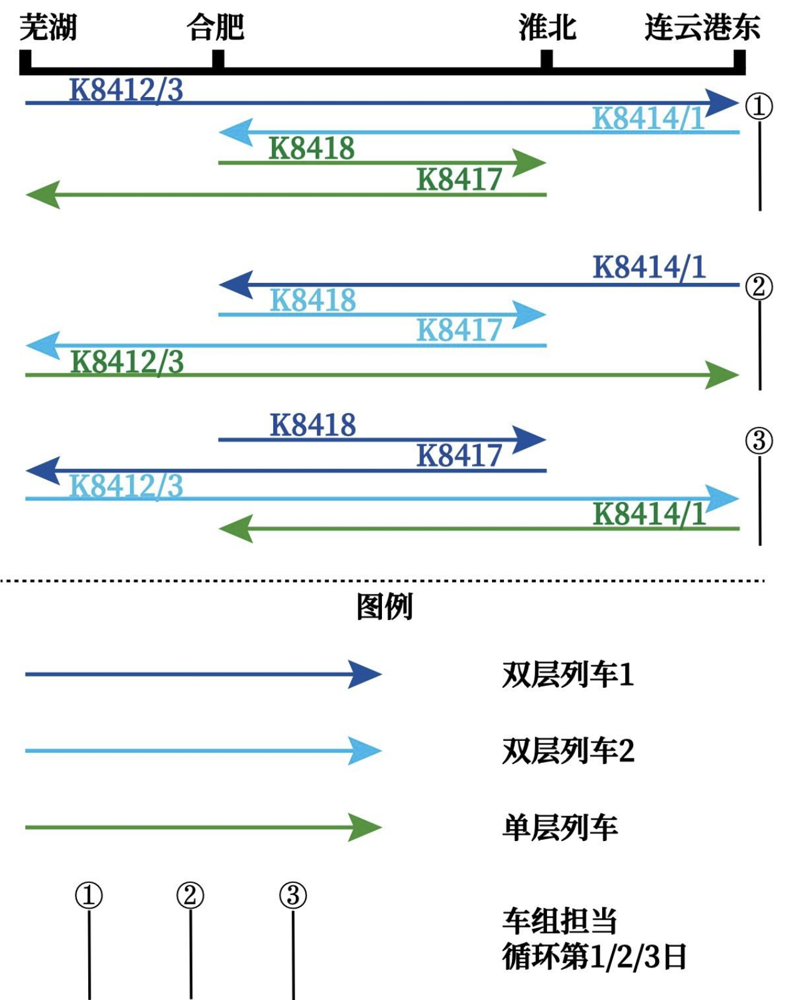
2月11日，我从南京乘一早的高速铁路前往合肥站。在南京南站站台上候车时，目击到的一列驶入车站的CRH2B型列车预示了今天的好的开始。
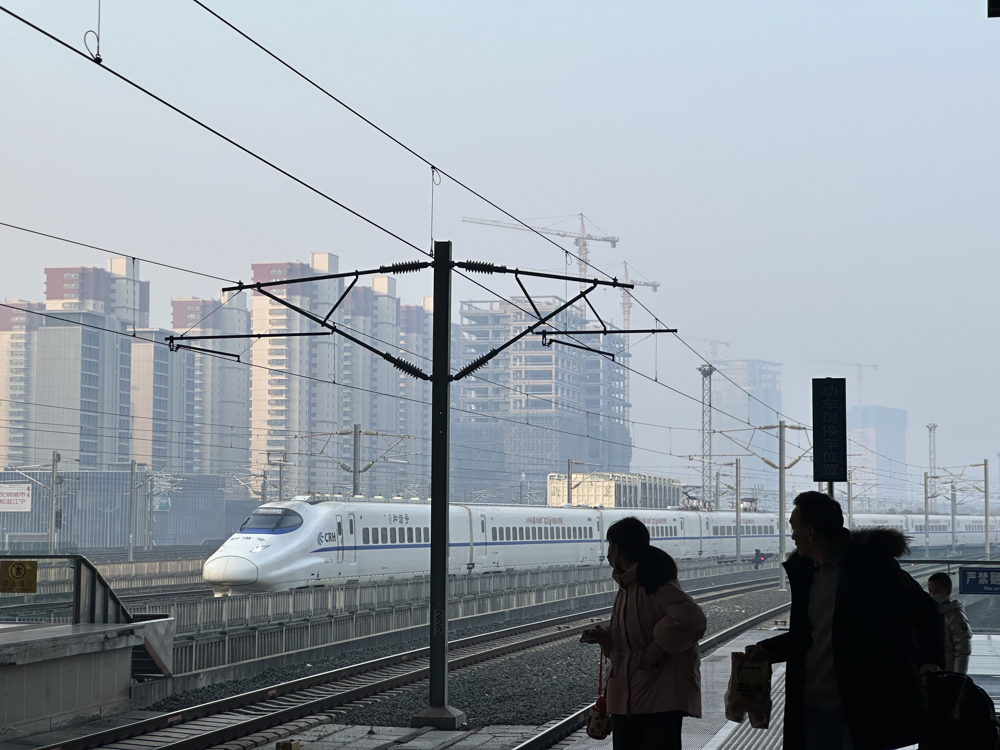
合肥→阜阳（K8412）
到合肥的时间是准时的。因为K8412按照预测会停靠在1站台，而1站台显然不需要通过天桥进入，于是不得不按照换乘指引前往合肥站站房。
列车进站的时间很早，预计在合肥站停靠的时间在30分钟左右；但检票口并没有在进站之后立即开检。因为正值春运，排队坐这趟车的劳工也不少；由于票价和正常的单层列车并无差别，持硬座车票的他们当然不在意列车坐席一共有几层。开检之后排队的人们鱼贯而入；检票的人数虽然多，但很少有年轻人，更多的还是外出务工的工人和他们的伴侣，大多数肩荷麻袋而行。在占全体乘客中少数的年轻人中，绝大多数都拎着些商品，也有一些只是带着手提包，因此应该基本都是在安徽境内短途旅行或者探亲的居民。原先在1楼候车室的二十余个检票闸机只开放了6个左右，后来车站又额外开放了另一个检票口的6个闸机的检票功能，让排队检票的长龙缩短了一半。春运期间大多数工人都已经在春节前回到各自的故乡，因此大年初一前后是整个春运最容易有余票的时间，相信这些人应该也都是没有办法买到前几日的车票才有此无奈；我也是因此没能买到春运其他时间的车票。
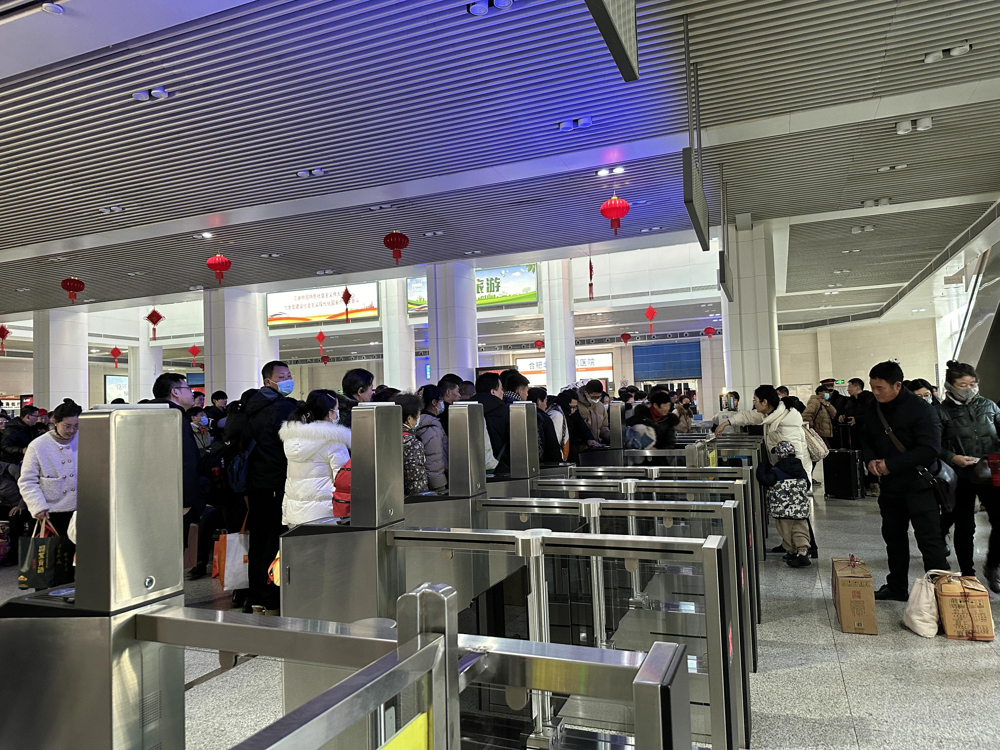
进入站台后一眼就看到了面前的软座车厢。2节软座车厢位于列车尾部，后方就是宿营车；而人流中鲜有在此走出的——多数人依然选择更实惠的硬座。
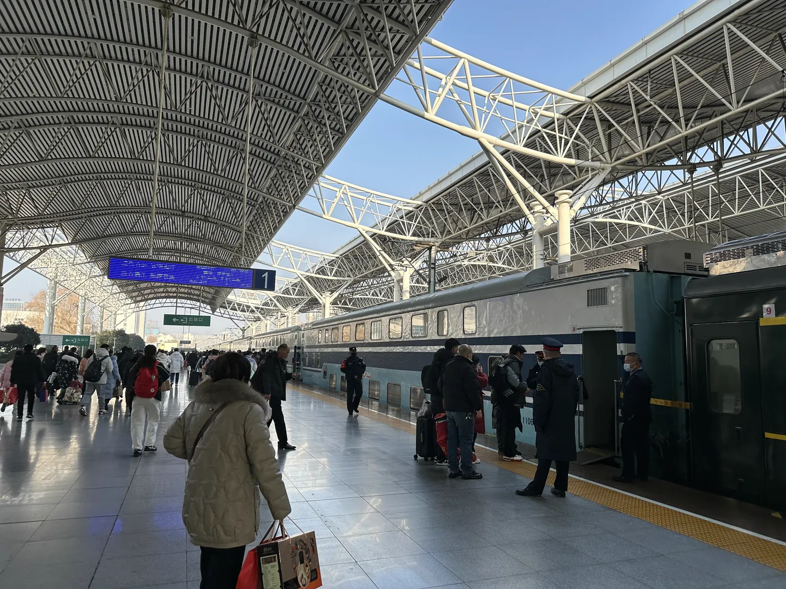

因为去年五一假期湖蓝双层列车出勤时据传闻有小孩为了拍摄强闯工作区域与站务发生了激烈冲突，我自然是不会考虑往前走了；于是验票走进车厢。
去程购买到的是上层的软座，视野高而开阔。车厢下层的车窗内侧有些贴着中国结等剪纸，仿佛暗示着它“春运限定常客”的身份；虽然上层车窗上没有贴纸，但整节车厢不论上下层内部都贴有七猫小说的广告，座位的枕巾上亦都印有汇源电池的广告——这两个品牌在上海铁路局的普速列车车厢外侧广告上也是熟人了。虽然软座价位比硬座高是不争的事实，但短途客车两者之间的票价差距并不大，加之过年期间“不论票价高低，能回家才是王道”，因此软座车厢的乘客依然不少。和兰州铁路局所管的单层软座列车相比，上海铁路局的这种车厢的坐席体验可谓是天差地别——车厢的坐席安排除了每侧每排只有2个座位之外和硬座车厢很难找到区别。两个座位之间没有隔离板，每个座位也没有各自的折叠桌；桌台两沿的乘客依然是相向而坐。不过兰州铁路局的软座车厢贵为25T，眼前的这列作为25K的“铺路石”，这种粗犷而简陋的配置自然也有几分合理。

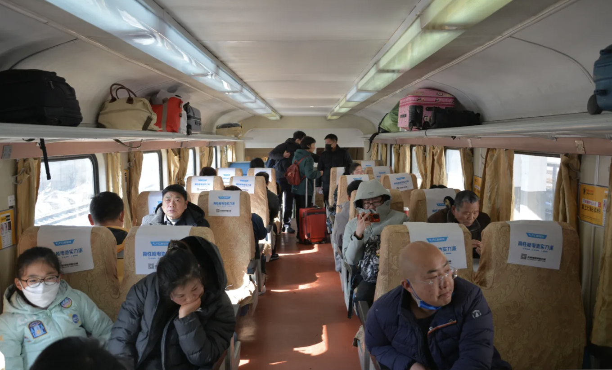
列车提前1分钟从合肥站发动，宣告了本人此次双层之行的开端。在驶离合肥站不久后，列车的休闲食物推销员便出现在了我们的面前——我所在的8号车厢又恰好是离宿营车9号车厢最近的一节，因此必然是这位推销员的第一站。这趟车从芜湖始发的开车时间非常早，很多乘客此时还在睡觉，但并没有受到他们面前的这位推销员的吆喝声影响，继续保持着鼾然的模样。
“首先欢迎大家乘坐这次豪华双层车；在这里祝大家新年快乐，旅行愉快。”推销员率先打破整节车厢的寂静，旋即有些儿童适应性地给出了掌声；万幸只是轻拍，不至于把他们的家长唤醒。随后便是这位推销员的自我介绍和对他手上的鲁菜商品的介绍，自然招不徕吃过早饭前来乘车的我的兴致，便也望向窗外，无心再听了。至于后来的试吃环节，这位推销员给车厢内每一位小孩都撕了些鸭肉，自然没有我的份。不过我周围的小孩吃了几口又觉得辣，于是唤醒了各自的家长让他们帮吃了——那些家长自然吃了以后不能入睡，于是整个车厢又充满了活泼的空气。
所谓的“豪华双层”最早是南京浦镇车辆厂和长春轨道客车为了满足中短途城际特快列车的客流设计制造的。至于这种湖蓝色的双层则与最早的S25K型客车不同，可以追溯到1996年9月南京浦镇车辆厂向上海铁路局交付的一批定员为108人的SRZ125Z型双层软座客车——这批列车在1996年10月投入沪宁快速列车运营。使用相同的涂装的对应硬座型号则于次年交付，并最终定型为S25K型。这两种车厢最终合编为一列，共计2组；之后为作统一，SRZ125Z改标记为S25K。因此湖蓝双层看似是与西局原色S25K不同的“非原色”，实则亦为“原色”。在2012年后，这2组双层逐渐仅在安徽、苏北间出现，最终变为今日仅在这片区域春运期间输送乘客。这次列车的软座看似顾名思义有较软的坐垫，其实与先前本人在从西安出发前往北宝成时所乘坐的T7次列车上的硬座没有太大差别；座椅唯一的差别兴许在于对每一个座位进行了加宽。
在驶离合肥站之后的一段时间，公路和铁路桥逐渐变得稀疏，水田则变得更多了。由于前不久还在下雪，加之经过时太阳刚出并没有多久，温度并不曾升的太高，一路上的积雪也渐而出现了。湖泊和浅水出现了一段时间，随后又变为了些砖房，进入了新的城市聚落——淮南大约是到了。
列车在从合肥驶出后90分钟有余到达了淮南站。从高层往窗外看，视线已经可以与站台防雨棚下方的车次信息显示屏平齐。有意思的是淮南站在本次列车的显示屏底部写着“8～16车厢向前”，应该是没有针对各次列车的编组情况进行相应的修改，“以不变应万变”。过了6分钟，列车又提前1分钟驶离淮南站。西行一段距离之后发现存车线中停着几节已经废弃一段时间的双层车厢——这些车厢上装配的方向牌（“水牌”）甚至还有未统一格式时的布局，也有几节贴着些已经严重掉色的纸质水牌。这些车厢的蓝色基本是已经完全看不到了，取而代之的是一种光照极长时间得来的浅橙色隐约复现着它们曾经涂装的轮廓。对比度鲜艳的我们驶过经已黯然的它们，不知我们今日所乘坐的车厢在未来的何时也会变成如今窗外的它们的模样。
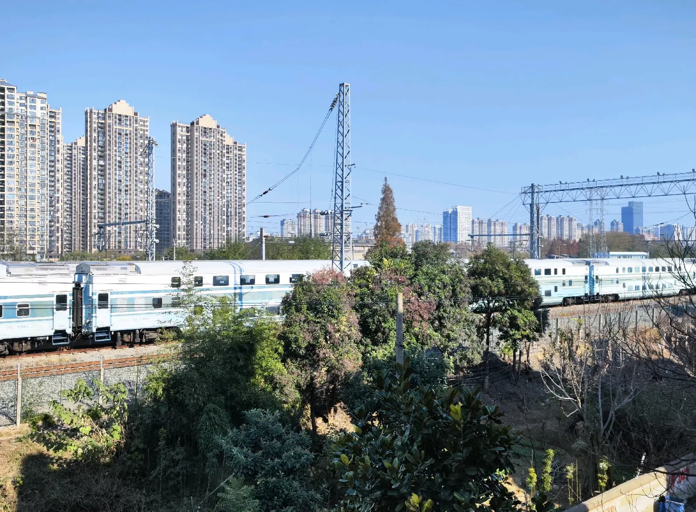
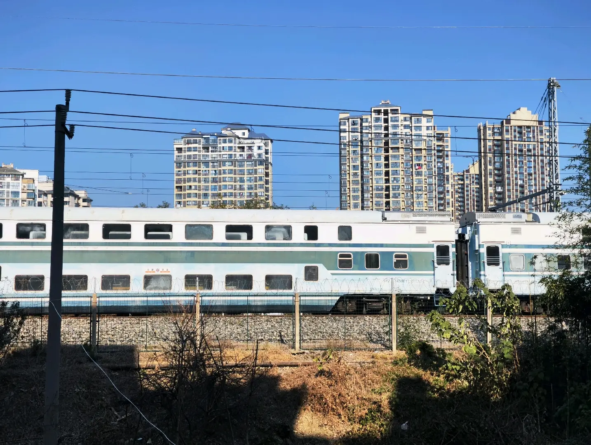
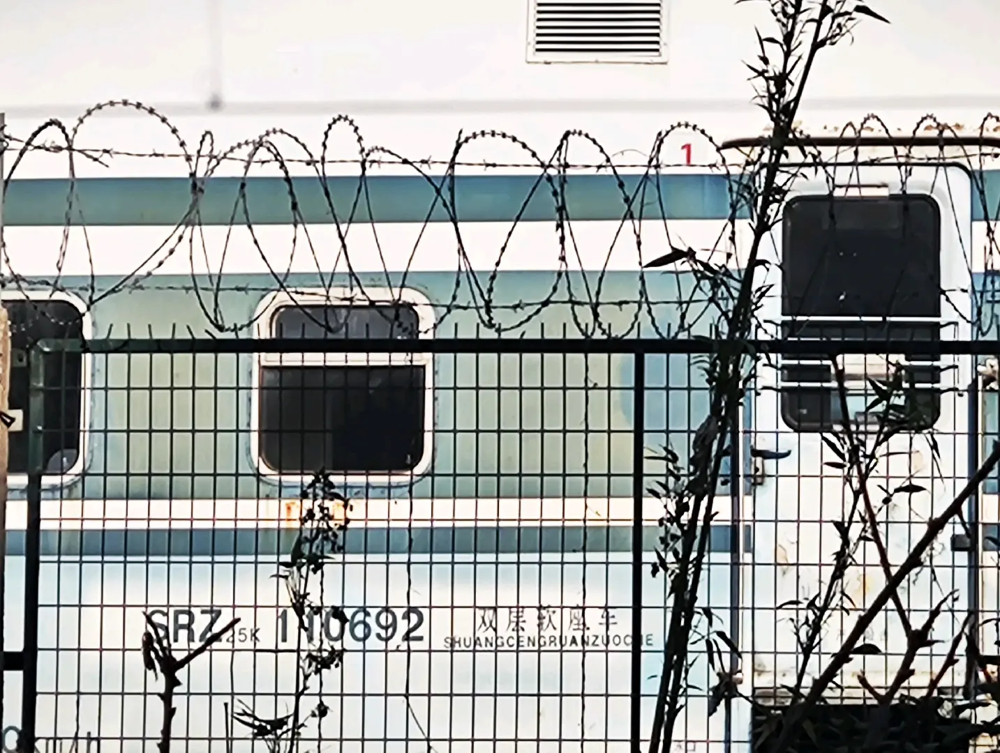
经过一个大弯道，列车很快上了淮河大桥。在数十秒之后，列车终于驶入了北方地区。植被的变化自不用说，工业建筑也算是多了起来。一路上又见到些百姓在坟墓旁放些鞭炮，在晴空之下只看到些熹微火光和小团烟雾，透过车窗的降噪传来些类似于列车在岔道上行驶时轮毂与轨条碰撞时的声音。
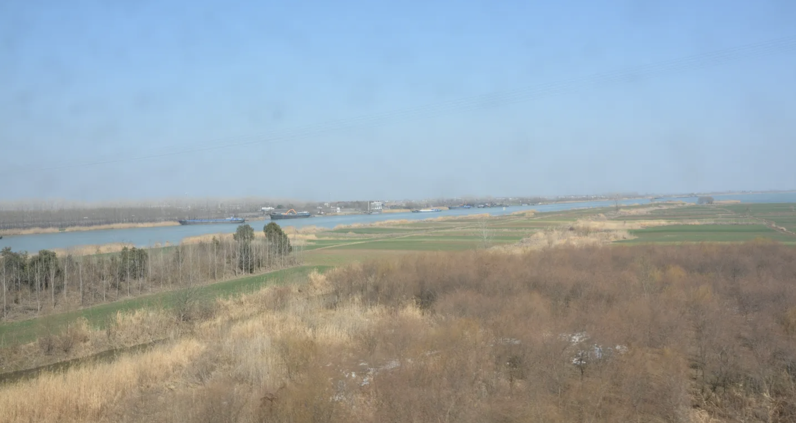

不知不觉，阜阳站便到了。在下车前问了掌管这节车厢人工站台补偿板的乘务明年春运会否还有这组车厢，他给出了肯定的回答；一些民间的谣言自然不攻自破。
阜阳→合肥（K8411）
阜阳站的便捷换乘有些麻烦，并不能通过股道上方的天桥横跨，只能与出站的乘客一起走到出站口之后掉头、从1站台回到站厅。因为阜阳站也是长站台，同为短编双层的K8411次列车停靠的位置正好与K8412次不重合，本想拍摄返程的K8411次列车进站、与K8412次列车同框镜头的我自然只能应规矩沿着合法路线离开，留下了更进一步的遗憾。在候车室站了约15分钟后，K8411次列车便也开始检票，很快便到了站台。与K8412次列车停靠的站台不同的是，K8411次列车停靠在低站台，让双层列车的群板裸露在了我的面前。一展全貌的机会自然不多，我自然是不会客气的；在拍摄的同时身后窜来一位年轻人，问我为何在此驻足。
“你也是来拍这列双层的？”他问。
这才意识到他手上的照相机，于是相视而笑，略微颔首。他自然也点头，于是朝不远处的车头去了。这次双层软卧车厢在站台远端，所以我们离车头并不远。但去年五一的蚌埠自由搏击事件中战地记者提供的珍贵录像画面依然萦绕在我的脑海中，于是还是放弃了跟他一同。
因为检票刚开始没有多久，出现在我的镜头中的下车旅客和上车的乘客还很多，加之这次列车在阜阳的停靠时间也不短，所以并不急着摄影。正在这时站台的另一侧股道上传来一阵警笛声，循声看到三个非常强烈的光点；待其驶近，发现其是一台和谐1D型电力机车单机，这在西安是很难见到的。

站台验票的工作进行的差不多了，有些车务走向验票员们，旋即到来的是互相的攀谈。在交谈之后终于是有了空当，而此时距离发车时间也不远了。于是火速拍摄，快速检票之后登车。巧合的是，我面前的一节软座车厢和硬座车厢的颜色有非常大的差异，于是稍作比较。颜色较浅的软座车厢2014年在浦厂完成检修，如今已经快有10年；颜色较鲜艳的在浦厂检修于2021年。这两节车厢的外观在各个细节上颜色都有非常大的不同，一些配件的位置也不尽相同。


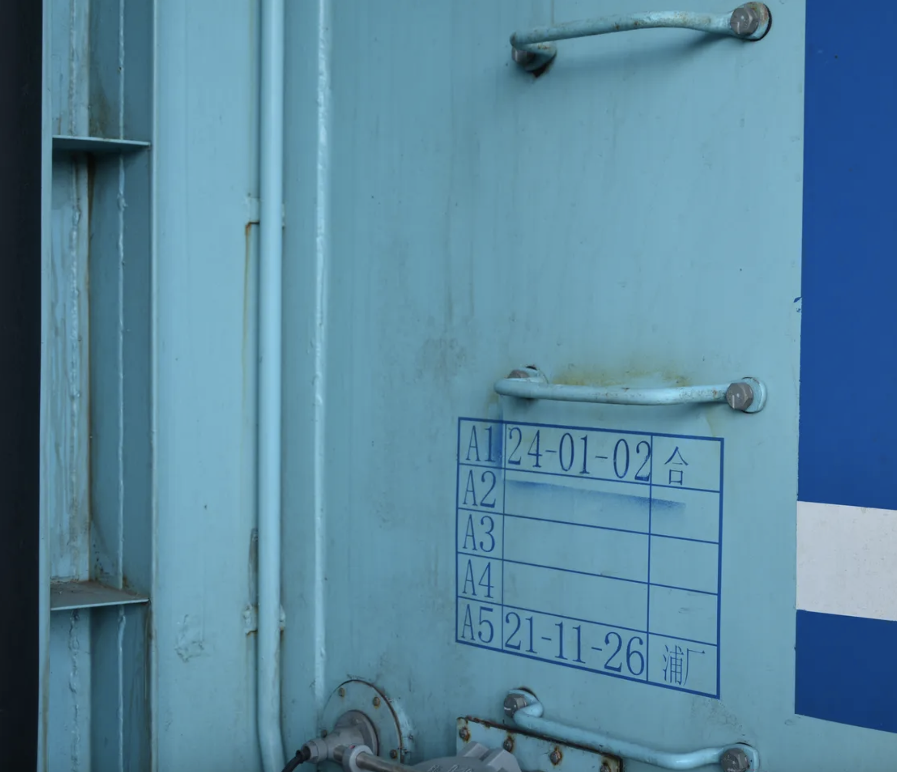

上车时之前遇到的那位摄影者便已经不见了踪影。按照返程车票的安排来到车厢下层，发现此时的乘客人数并不多；甚至有乘客横卧于坐席上，独占2个座位。幸而其还穿着袜子，并未闻到足味。在列车驶出淮南站之后，整个车厢的情况就完全反过来了——整节车厢都已经坐满。大年初二亲戚确已经几乎探访得差不多了，一些乘客也到了回城休整、准备在新的一年继续打工、继续挣工资的时候。


到了合肥站之后，这次双层之旅便也告一段落了。所有的乘客都零碎着走出车厢，双层带来的每节20人额外运力让整节车厢的疏散时间变长了一些。在人皆散去、机车离开之后，站台上便成为了乘务和铁摄者的空间；此时因为已是下午3点多，拍摄者自然比早晨多了很多。在文明友好的拍摄途中，我们并没有受到站务的驱逐和车务的阻拦；由于列车在合肥站开右边门而不是在阜阳站时的左边门，车厢的另一侧得以呈现在我们的眼前。7号车厢在阜阳站停靠时站台一侧一些地方有轻微的刮损，到了另一侧已经可以说是遍身补丁了；又发觉方向牌旁边有先前所用方向牌的胶痕，走近一看是先前几年的车次号。

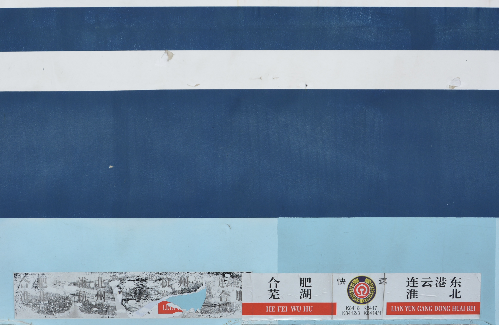
在简短的拍摄之后，我便急着去合肥南站换乘回南京的高铁；至于后来手机因为没电而不得不在地铁站紧急充电刷码进站并因此误车，就都是后话了。
后记
火车不仅拉近了城市与城市之间的距离，也让各位乘客有了一路的相遇之缘。各位旅客，期待下次旅途再会！
这一句话是K8411次列车到达终点站后的播音内容，在我心中却反而留下了最深的印象。
固然铁路让各个城市之间的往来速度大幅提升，便捷了沿线居民的出行。然而此次湖蓝双层作为了一个更多的契机，让一众摄影人士前来留念，不论是在我们所在的站台上还是列车驶过的线路旁，都有着长枪短炮的待机——借着这个机会，也有很多人由不认识彼此变为了相识。在今年早些时候我前往北京拍摄最后的Z1次列车和牵引的“毛泽东号”时，莲花桥旁也有各行各业的男女老少前来摄影；随着在场的人们聊得这些机车，同好们逐渐扩大了讨论的范围，最终认识了彼此，如此故事自然不在话下。铁路使熟人相聚，亦能使人们相遇；此话如此想来却也无误。
至于这原色双层还能在路多久，不得而知——虽然从乘务的口中得到了明年还有的答复，但毕竟他们不是布局者。另一方面，一个车厢经历不了多少次A5大修；此番这些湖蓝双层的车厢检修表上大多数A5一栏都已经记有时间，由此可见这些车厢的未来寿命有限。我们固然期待明年这2组列车还能够出现在长三角，但金属注定随时间推移而走向衰老；珍惜眼下每一次乘旅确也是最好的送行了。
江淮平原上林立的城市静望着新春时分依然流动的河川，也默视着这些在青空之镜上方虹驰而过的湖蓝和其中的人民。雨水时节还有一周就要到来，回升的气温让完全映出天空颜色的深蓝湖面重破浅色蒙布般的薄冰，重又呈诸人们的眼前；暖湿气流的交锋也终于得以在郊外坟头的炮竹声中隆重登台，引得人们加紧各自对天气预报的局促与查看。